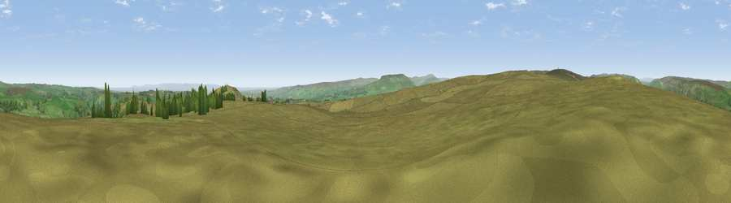

Viewpoint near Marrick
#9689 in England · top 16% of its area beats it · near MarrickThe view, rendered

A 360° render of this exact spot computed from the terrain model, tree cover and land cover — summer colours, afternoon light, calibrated against photographs of famous viewpoints. Real trees, hedges and buildings will differ in detail.
The panorama
Grey silhouette: terrain skyline in each direction (720 bearings, Earth curvature and refraction included). Dashed green: skyline with trees (+15 m) and buildings (+8 m) as obstacles. Blue strip: how far the ground is visible on each bearing.
Where the view opens
Wedge length = distance to the farthest visible ground on that bearing (vegetation-aware). Rings at 10, 25 and 50 km.
What fills the view
93% grassland · 4% woodland · 2% cropland
Angular shares of the visible panorama (visual magnitude), not map area. Landscape diversity 0.13 (0–1 Shannon).
Key numbers
More beautiful places nearby
The staircase of upgrades: each row has a higher view potential than everything closer. Driving times are estimates from straight-line distance, calibrated against real road routing — check an actual route before setting out.
| Place | Direction | Drive | Score |
|---|---|---|---|
| Viewpoint near Marrick | NW · 0 km | ~1 min | 70.5 |
| Whit Fell | ESE · 2 km | ~5 min | 70.7 |
| Viewpoint near West Witton | S · 9 km | ~17 min | 75.6 |
| Viewpoint near East Witton | SE · 13 km | ~23 min | 77.8 |
| Whernside | WSW · 35 km | ~54 min | 79.9 |
| Viewpoint near Kirby Knowle | ESE · 39 km | ~59 min | 80.5 |
| Beacon Hill | E · 39 km | ~59 min | 84.7 |
| Carlton Bank | E · 46 km | ~66 min | 85.1 |
54.35342, -1.89727 · source: screening · position refined by local search. Computed location — check access rights before visiting.